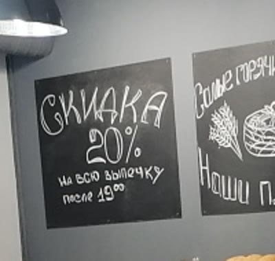

| 2ГИС | Яндекс Карты | |
|---|---|---|
| Рейтинг | 4,7 · 329 оценок | 4,7 · 159 оценок |
| Карточка подтверждена | Плашка «давно не обновляла данные» | Нет, «Вы владелец этой организации?» |
| Телефон | +7 918 123-17-08 | +7 918 210-66-55, другой номер |
| Часы работы | Ежедневно 7:00–21:00 | Ежедневно 7:00–21:00 |
| Меню и цены | Пусто | Нет |
| Ответы на отзывы | 0 из 50 | Нельзя, карточка не ваша |
| Фото | 13 | 33 |
| Сайт | Нет | Только визитка на clients.site |
Что нашёл
Жалобы на обслуживание висят без ответа важно
Из 50 последних отзывов в 2ГИС 16 на одну-две звезды, и 13 из них про продавцов, а не про выпечку. Два свежих, март 2026: персонал хамит
, обслуживание просто кошмар
, при этом оба пишут «еда вкусная». В Яндексе то же самое в цифрах: еду хвалят в 88% отзывов, персонал только в 60%. Ответа нет ни на одну жалобу, и новый покупатель видит только претензии.
В 2ГИС и Яндексе разные телефоны важно
В 2ГИС указан +7 918 123-17-08, в Яндекс Картах +7 918 210-66-55. Если один из номеров старый, часть людей, кто хочет заказать торт или узнать про хлеб, просто не дозванивается и идёт в другую пекарню.
Карточка в Яндекс Картах никому не принадлежит важно
На карточке висит «Вы владелец этой организации?». Пока она не подтверждена, нельзя ответить на 82 отзыва, поменять телефон, добавить меню и фото. В «Похожих местах» прямо под вами Яндекс показывает «Плюшку-Ватрушку» с рейтингом 5,0 и 451 оценкой и «Ласточку» 5,0 с акцией «6-ой кофе в подарок».
2ГИС пишет каждому: «Компания давно не обновляла данные» заметно
Эту строку видит каждый, кто открывает карточку, а в разделе «Актуальность данных» стоит «не подтверждена». У соседей в «Похожих организациях» рядом написано «Данные актуальны».
Люди спрашивают про хлеб и торты, а отвечает робот заметно
В «Вопросах о месте» в 2ГИС: Когда обычно выносят свежий хлеб?
, Есть ли торты на заказ?
, Доставляют ли вашу выпечку?
. Отвечает ИИ-помощник 2ГИС, а не вы. Торты на заказ, бенто и фототорты у вас в карточке есть, но человек этого не узнаёт и заказывает у соседа.
Вкладка «Меню» пустая, хотя цены уже есть на витрине заметно
В 2ГИС во вкладке «Меню» только просьба сфотографируйте меню заведения
. При этом на фото витрины видны ценники: корзиночка 60 ₽, пирожное ореховое 95 ₽, торт морковный 110 ₽. Человек, который выбирает, куда зайти за пирожными, видит цены у соседей и не видит у вас.

На вашей карточке рекламируется другая пекарня заметно
В блоке «Похожие организации» прямо под вашим адресом стоит реклама «Хлебных историй» с кнопкой «Заказать доставку». Ниже «Сдоба у дома» и «Хлебшеф» с подписями «Торты на заказ».
Скидка вечером есть только на доске внутри просто
На одном из фото в 2ГИС на доске написано «Скидка 20% на всю выпечку после 19:00». Это отличный повод зайти по дороге с работы, но ни в 2ГИС, ни в Яндексе об этом ни слова. Если акция ещё действует, она работает только на тех, кто уже внутри.

Первое фото в 2ГИС: ваза с цветами, а не выпечка просто
Всего 13 фото в 2ГИС против 33 в Яндексе, и обложкой карточки стоит букет в корзинке на столе. Пекарню выбирают глазами: тёплый хлеб и витрина с пирожными продают лучше любого текста. Ещё на вывеске крупно написано «Пекарня», а «Плюшкино» только мелко на круглом знаке, так что фото фасада с подписью помогает узнать вас с улицы.
Что предлагаю
Беру на себя всё из списка: вам нужно только подтвердить карточки по коду из СМС.
- Подтвердить карточки в 2ГИС и Яндексе, один телефон и одно расписание везде, меню с ценами, рубрики
- Ответить на все отзывы, в первую очередь на жалобы, и дальше отвечать на новые
- Поставить хорошие фото: витрина, хлеб, торты, фасад
- Сайт пекарни со ссылкой из обеих карточек: вот концепт
- Раз в месяц отчёт: сколько людей посмотрели карточку, позвонили и построили маршрут
Разбор бесплатный. Стоимость работ обсудим, она небольшая.